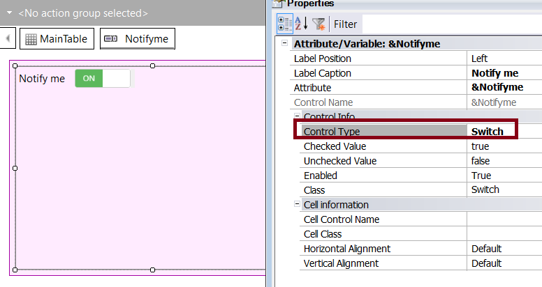
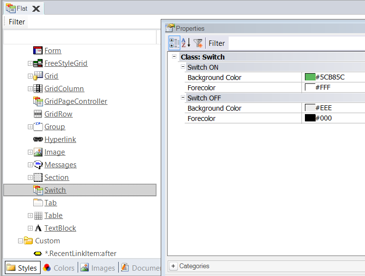

Switch Control
The Switch control is presented as a toggle that allows selecting one of two possible values: on or off. It is one of the built-in controls and can be selected from the Control Type property.
It may be used as a replacement for the traditional Check Box control, and it's available for Panels and for Web Panels as well.
Web Panels
Only the Abstract layout supports this control.


Panels

How to change the aesthetics of the control
As of GeneXus 17 upgrade 5, both Web and Mobile applications support configuring the visual aspect of the control via a Theme Class.


Properties
| Name | Description |
| Auto Grow (SD only) | Auto Grow description |
| Checked Value | Indicates the "switch on" value |
| Unchecked Value | Indicates the "switch off" value |
| ON Text (Web only) | indicates the text it shows when the ON value is selected |
| OFF Text (Web only) | indicates the text it shows when the OFF value is selected |
Events
ControlValueChanged : It is triggered when the value of the control changes.
Compatibility notes
The ValueChanged event for the Switch control in iOS has been deprecated. The ControlValueChanged event should be used instead.
| Backlinks |
| Control Type property |
| Switch Control (GeneXus 17 upgrade 4) |